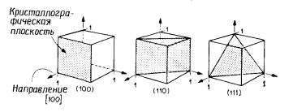

электронный
ресурс по учебной дисциплине 1-58 01 01 - "ИНЖЕНЕРНО-ПСИХОЛОГИЧЕСКОЕ ОБЕСПЕЧЕНИЕ ИНФОРМАЦИОННЫХ ТЕХНОЛОГИЙ"
|
||
| Оглавление | Программа | Теория | Практика| Контроль знаний | Об авторах | ||
|
Содержание
ТЕМА 1 МОНОКРИСТАЛЛЫ И ПОДЛОЖКИ § 1.1 Технология получения монокристаллов § 1.2 Технологическое оборудование для получения монокристаллов § 1.3 Примеси, дефекты, оценка параметров кристаллов § 1.4 Технология и оборудование для получения пластин (подложек). § 1.1 Технология получения монокристаллов Выращивание кристаллов по методу Чохральского. Основной объем монокристаллического кремния (80—90%), потребляемого электронной промышленностью, выращивается по методу Чохральского. Фактически весь кремний, используемый для производства интегральных схем, производится этим методом. Кристаллическая структура кремния. Кремний обладает алмазоподобной кубической кристаллической решеткой (рис. 1.1), которая может быть представлена в виде двух взаимопроникающих гранецентрированных решеток. Каждый атом кремния имеет четыре ближайших соседних атома, с которыми он связан ковалентно. Параметр решетки кремния составляет 0,54 нм, а расстояние между двумя ближайшими соседними атомами, как видно из простого геометрического рассмотрения, равно 0,23 нм. Легирующие атомы (в основном атомы 3-й и 5-й групп) замещают атомы кремния, занимая их место в кристаллической решетке. Являясь донором замещения, фосфор четырьмя из пяти своих валентных электронов ковалентно связан с четырьмя ближайшими соседними атомами кремния, оставляя пятый свободным для поддержания электрической проводимости. Аналогично бор представляет собой акцептор замещения. Три его валентных электрона также ковалентно связаны с ближайшими соседними атомами кремния. Недостаток электронов для заполнения связей служит основой для дырочной проводимости. Примеси или легирующие атомы, которые занимают места, не определяемые структурой решетки, называются межузельными или примесями внедрения. Рисунок 1.1 – Схематическое представление кристаллической решетки кремния. Главные оси в кристалле могут быть использованы для введения обозначения характерных направлений и плоскостей (рис. 1.2). Такую систему обозначений называют индексами Миллера. Эти индексы представляют собой набор малых целых чисел, заключенных в круглые, квадратные, угловые и фигурные скобки. Например, запись [111] обозначает конкретное направление, в то время как запись <111> указывает семейство всех восьми направлений, эквивалентных [111]. Обозначение (100) связано с определенной плоскостью решетки, а {100} определяет все плоскости, кристаллографически эквивалентные плоскости (100). Особенности технологии и некоторые свойства кремниевых подложек зависят от их ориентации. Плоскости {111} обладают максимальной плотностью упаковки атомов, поэтому кристаллы наиболее легко растут именно в этом направлении. Механические свойства, например предел прочности, достигают максимальных значений для направлений <111>. Модуль упругости также проявляет зависимость от ориентации (приложение А). Характеристики таких процессов, как окисление, также зависят от ориентации подложки. Например, плоскости {111} окисляются быстрее, чем {100}, вследствие большей поверхностной плотности упаковки атомов, способных вступать в реакцию окисления. И хотя, казалось бы, выбор ориентации кристаллического роста предопределен особенностями строения решетки кремния, необходимо принимать во внимание и требования, обусловленные особенностями полупроводниковых приборов. Традиционно биполярные схемы формируют на подложках с ориентацией {111}, а МОП-приборы — на подложках с ориентацией {100}. Существуют, конечно, и исключения. Например, уже выращены кристаллы с ориентацией <110>, однако в обычных условиях достичь такого роста довольно затруднительно. Реальные кристаллы, которыми являются кремниевые подложки, отличаются от математически идеальных кристаллов следующими свойствами. Во-первых, они не бесконечны, и поэтому поверхностные атомы обладают свободными связями. Во-вторых, атомы в решетке смещены относительно идеального положения вследствие термических колебаний. И, в-третьих, что представляется наиболее важным, реальные кристаллы содержат дефекты. Эти дефекты можно классифицировать как точечные, линейные, поверхностные (или двумерные) и объемные. Дефекты оказывают влияние на оптические, электрические и механические свойства кремния.  Рисунок 1.2 – Схематическое представление плоскостей с различными индексами Миллера в кубической решетке. Точечные дефекты. Как показано на рис. 1.3, существует несколько видов точечных дефектов. Любой инородный атом, оказавшийся в решетке кремния, рассматривается как точечный дефект вне зависимости от того, является ли он атомом замещения или атомом внедрения. Это определение справедливо как для легирующих, так и для остаточных примесей. Недостающий в решетке атом создает вакансию, называемую дефектом Шоттки, которая также рассматривается как точечный дефект. Атом кремния в межузельном положении и оставленную им вакансию называют дефектом Френкеля. Вакансии и межузельные атомы кремния находятся в равновесных концентрациях, которые определяются температурой кристалла. Исходя из принципов термодинамики, эти концентрации могут быть записаны как функция температуры в следующем виде: где Nd — концентрация точечных дефектов, А — постоянная, Еа — энергия активации, равная 2,6 эВ для вакансий и 4,5 эВ для межузельных атомов, Т — абсолютная температура и k — достоянная Больцмана. Рисунок 1.3 – Расположение и типы точечных дефектов в простой кубической решетке Дислокации. Дислокации составляют второй класс дефектов. Основные виды этих дефектов — краевая и винтовая дислокации, название которых отражает их форму в кристаллической решетке. На рис. 1.4 схематически показана краевая дислокация в кубической решетке. Рисунок 1.4 – Краевая дислокация в простой решетке, образованная лишней атомной полуплоскостью. Ось дислокации расположена перпендикулярно плоскости страницы Примеси замещения с ковалентным радиусом, большим или меньшим радиуса атома кремния соответственно, сжимают или растягивают решетку. Вводимая деформация S зависит от размера атома примеси и ее концентрации S = BCE/( 1— ν), (1.2) где В — постоянная сжатия решетки, отражающая степень искажения решетки из-за введения примеси (В = 8*10-24 см3/атом для бора), С — концентрация примеси, Е — модуль Юнга и ν — коэффициент Пуассона. Появление дислокаций в приборах — нежелательное явление, потому что они действуют как сток для металлических примесей и изменяют диффузионный профиль. Дислокации могут быть выявлены селективным травлением. Поверхностные, или двумерные, дефекты. К поверхностным дефектам относятся двойниковые границы и границы зерен. Рассматриваемые дефекты возникают в процессе роста кристаллов. Кристаллы с такими дефектами не используются для производства ИС и подлежат отбраковке. Объемные дефекты. Преципитаты примесей или легирующих элементов составляют четвертый класс дефектов кристаллической структуры. Каждая примесь, введенная в решетку, имеет предельную растворимость в ней, т. е. концентрацию, до которой решетка может принять в свой твердый: раствор эту примесь. В общем случае преципитаты нежелательны, так как являются источниками дислокаций. Теория роста кристалла. Кристаллический рост заключается в фазовом переходе из твердого, жидкого или газообразного состояния в кристаллическую твердую фазу. Большинство кремниевых кристаллов, используемых для изготовления; подложек, выращивается по методу Чохральского. Применительно к кремнию этот процесс может быть охарактеризован как однокомпонентная ростовая система жидкость — твердое тело. Рисунок 1.5 – Градиент температуры, кристаллизация и явления переноса, происходящие в процессе выращивания кристаллов по методу Чохральского. Точки 1 и 2 соответствуют положению изотерм, приведенных с этими же индексами в* уравнении (1.6), в процессе кристаллизации на границе раздела фаз. Примесные атомы пересекают граничный слой и встраиваются в поверхностный слой растущего кристалла. Рост кристаллов по методу Чохральского заключается в затвердевании атомов жидкой фазы на границе раздела. Скорость роста определяется числом мест на поверхности растущего кристалла для присоединения атомов, поступающих из жидкой фазы, и особенностями теплопереноса на границе раздела фаз. На рис. 1.5 схематически представлены процесс массопереноса и градиент температуры в системе жидкость.— кристалл. Рассмотрим влияние скорости вытягивания на возникновение дефектов в кристаллах, выращенных по методу Чохральского. При охлаждении кристалла от температуры кристаллизации происходит конденсация точечных дефектов с образованием дислокационных петель. Применительно к кремнию этот процесс осуществляется при температуре выше 950°С. Плотность дефектов зависит от скорости охлаждения кристалла в этом температурном диапазоне, которая является функцией скорости вытягивания кристалла и его диаметра. При скорости вытягивания ~2 мм/мин формирования дефектов не происходит. Это обусловлено закалкой точечных дефектов и, следовательно, предотвращением их агломерации. Как можно видеть из графика (рис. 1.7), такая скорость вытягивания кристалла не может быть достигнута для кристаллов диаметром более 75 мм без ухудшения степени их монокристалличности. Происходящее при росте кристаллов локальное расплавление обусловлено нестабильностью температуры из-за тепловой конвекции. Это явление также можно подавить путем увеличения скорости вытягивания до 2,7 мм/мин, что составит половину максимально возможной скорости вытягивания кристалла. Рисунок 1.6 – Экспериментально определенный градиент температуры вдоль ост растущего кремниевого кристалла между точками А н В. Рисунок 1.7 – Теоретическое и экспериментальное значения скорости вытягивания» кристаллов, выращиваемых по методу Чохральского § 1.2 Технологическое оборудование для получения Установка для выращивания кристаллов представлена на рис. 1.8. Масса такой установки составляет 17 600 кг, а высота равна 6,5 м. Контейнер (тигель) установки вмещает до 60 кг расплава кремния, что достаточно для выращивания монокристаллов диаметром 100 мм и длиной 3 м. Установка включает четыре основных узла (рис. 1.8) 1. Печь, в которую входят тигель, контейнер, механизм вращения, нагреватель, источник питания и камера. 2. Механизм вытягивания кристалла, содержащий стержень Или цепь с затравкой, механизм вращения затравки и устройство для зажима затравки. 3. Устройство для управления составом атмосферы, состоящее из газовых источников, расходомеров, системы продувки и вакуумной системы. 4. Блок управления, в который входят микропроцессор, датчики и устройства вывода Рисунок 1.8 – Промышленная установка для выращивания кристаллов по методу Чохральского Рассмотрим более подробно действие установки для выращивания кристаллов (рис. 1.9). Печь. Тигель является, вероятно, наиболее важным элементом ростовой системы. Так как тигель содержит расплав, его материал должен быть химически инертен по отношению к расплавленному кремнию. Это основное требование при выборе материала тигля, так как электрические свойства кремния чувствительны даже к таким низким уровням примеси, как 10-7 ат. %. Кроме того, материал тигля должен иметь высокую температуру плавления, обладать термической стабильностью и прочностью. И наконец, тигель должен быть недорогим или обладать способностью к многократному использованию. К сожалению, расплавленный кремний растворяет почти все обычна используемые для высокотемпературных тиглей материалы, например карбиды тугоплавких металлов (TiC или ТаС), тем самым способствуя слишком высокому уровню металлических примесей в растущем монокристалле. 1 — затравочный шток, устройство подъема н вращения; 2 — верхний кожух; 3 — изолирующий клапан; 4— газовый вход; 5 — держатель затравки и затравка; 6 — камера высокотемпературной зоны; 7 — расплав; 8 — тигель; 9 — выхлоп; 10—вакуумный насос; И — устройство вращения и подъема тигля; 12 — система контроля и источник энергии; 13 — датчик температуры; 14 — пьедестал; 15 — нагреватель; 16 — изоляция; 17 — труба для продувки; 18 — смотровое окно; 19 — датчик для контроля диаметра растущего слитка Рисунок 1.9 – Схема установки для выращивания кристаллов по методу Чохральского Тигли из графита или карбида кремния также неприемлемы. Несмотря на то что углерод является электрически Нейтральной примесью в кремнии, вырастить высококачественные монокристаллы кремния из расплавов, насыщенных углеродом, не удается. В таких случаях в процессе роста наблюдается двухфазная кристаллизация, как только будет превышен предел растворимости углерода в растущем кристалле. Возникающая вторая фаза представляет собой SiC и приводит к образованию дислокаций и срыву монокристаллического роста. В настоящее время для использования в качестве материалов для тигля наилучшим образом подходят нитрид кремния или кварц. Возможность использования нитрида кремния в качестве материала для тиглей была продемонстрирована при осаждении нитрида из парогазовых смесей на стенки обычного тигля. Такой метод заслуживает внимания в качестве способа удаления кислорода из системы расплав — растущий монокристалл. Однако даже нитрид кремния подвергается эрозии, приводя к легированию кристалла азотом, который становится в кремнии слабым донором. Нитрид, осажденный из ПГС, — лишь одна из форм нитрида достаточной степени чистоты, которая может быть использована для тиглей. Однако, прежде чем получить распространение на практике, необходимы дальнейшие исследования этого метода получения тиглей. Как упоминалось выше, контейнер используется для поддержки кварцевого тигля. В качестве материала для контейнера служит графит, поскольку он обладает хорошими высокотемпературными свойствами. Обычно, как и в ядерной технологии, используют сверхчистый графит. Высокая степень чистоты необходима для предотвращения загрязнения кристалла примесями, которые выделяются из графита при высоких температурах процесса. Как и контейнер, все другие графитовые части установки, находящиеся в высокотемпературной зоне, должны быть выполнены из сверхчистого материала. Контейнер устанавливают на пьедестал, вал которого соединен с двигателем, обеспечивающим вращение. Все устройство можно поднимать или опускать для поддержания уровня расплава в одной фиксированной точке, что необходимо для автоматического контроля диаметра растущего слитка. Камера высокотемпературного узла установки должна соответствовать определенным требованиям. Прежде всего она должна обеспечивать легкий доступ к деталям узла для облегчения загрузки и очистки. Высокотемпературный узел должен быть тщательно герметизирован, чтобы предотвратить загрязнение системы из атмосферы. Кроме того, должны быть предусмотрены специальные устройства, предотвращающие нагрев любого узла камеры до температуры, при которой давление паров ее материала в камере может привести к загрязнению кристалла. Как правило, наиболее сильно нагреваемые детали камеры имеют водяное охлаждение, а между нагревателем и стенками камеры устанавливают тепловые экраны. Для расплавления материала загрузки используют главным образом высокочастотный индукционный или резистивный нагрев. Индукционный нагрев применяют при малом объеме загрузки, а резистивный — исключительно в больших ростовых установках. Резистивные нагреватели при уровне мощности порядка нескольких десятков киловатт обычно меньше по размеру, дешевле, легче в изготовлении и более эффективны. Они представляют собой графитовый нагреватель, соединенный с источником постоянного напряжения. Механизм вытягивания кристалла. Механизм вытягивания кристалла должен с минимальной вибрацией и высокой точностью обеспечить реализацию двух параметров процесса роста: скорости вытягивания и скорости вращения кристалла. Затравочный кристалл изготавливается с точной (в пределах установленного допуска) ориентацией, поэтому держатель затравки и механизм вытягивания должны постоянно удерживать его перпендикулярно поверхности расплава. Направляющие винты часто используются для подъема н вращения слитка. Этот метод позволяет безошибочно центрировать кристалл относительно тигля, однако при выращивании слитков большой длины может оказаться необходимой слишком большая высота используемой установки. Поэтому, когда поддержание необходимой точности при выращивании длинных слитков не обеспечивается винтовым устройством, приходится применять многожильные тросы. В этом случае центровка положения монокристалла и тигля затруднена. Более того, в процессе наматывания троса возможно возникновение маятникового эффекта. Тем не менее применение тросов обеспечивает плавное вытягивание слитков из расплава, а при условии их наматывания на барабан высота установок значительно уменьшается. Кристалл выходит из высокотемпературной зоны через систему продувки, где газовый поток — в случае если выращивание производится в газовой атмосфере — движется вдоль поверхности слитка, приводя к охлаждению последнего. Из системы продувки слиток попадает в верхнюю камеру, которая обычно отделена от высокотемпературной зоны изолирующим клапаном. Устройство для управления составом атмосферы. Рост монокристаллов кремния по методу Чохральского должен проводиться в инертной среде или вакууме. Это вызвано следующими причинами: 1) нагретые графитовые узлы должны быть защищены от воздействия кислорода для предотвращения эрозии; 2) газовая атмосфера не должна вступать в химическую реакцию с расплавом кремния. Выращивание кристаллов в вакууме удовлетворяет указанным требованиям и, кроме того, имеет ряд преимуществ, в частности, способствует удалению из системы моноокиси кремния, тем самым предотвращает ее осаждение на стенках камеры. При выращивании слитков в газовой атмосфере чаще всего используют инертные газы — гелий или аргон. Инертные газы могут находиться при атмосферном или пониженном давлении. В промышленном производстве для этих целей используется аргон, что объясняется его низкой стоимостью. Оптимальный расход газа составляет 1500 л на 1 кг выращенного кремния. Аргон поступает в камеру при испарении из жидкого источника и должен соответствовать требованиям высокой чистоты в отношении содержания влаги, углеводородов и др. Блок управления. Блок управления может включать в себя разные приборы. Он предназначен для контроля и управления такими параметрами процесса, как температура, диаметр кристалла, скорость вытягивания и скорость вращения. Контроль может проводиться по замкнутому или разомкнутому контуру. Параметры, включающие скорости вытягивания и вращения имеют большую скорость отклика н чаще всего контролируются по принципу замкнутого контура с обратной связью. Большая тепловая масса расплава обычно не требует кратковременного контроля температуры. Например, для контроля диаметра растущего кристалла инфракрасный датчик температуры может быть сфокусирован на границе раздела фаз расплав — монокристалл и использован для определения температуры мениска. Выход датчика связан с механизмом вытягивающего устройства и контролирует диаметр слитка путем изменения скорости вытягивания. Наиболее перспективными управляющими системами являются цифровые микропроцессорные системы. Они позволяют уменьшить непосредственное участие оператора в процессе выращивания и дают возможность организовать программное управление многими этапами технологического процесса. § 1.3 Примеси, дефекты, оценка параметров кристаллов Примеси и дефекты. Кислород — случайная примесь в кремнии, образующаяся в результате растворения материала тигля в процессе роста монокристалла. Типичный диапазон концентрации кислорода в слитке лежит в пределах 5*1017—1018 см-3. Однако распределение кислорода вдоль оси слитка отражает особенности оборудования, применяемого для роста кристаллов, и характеристики процесса выращивания, поскольку они оказывают влияние на эрозию тигля и испарение кислорода из расплава. Например, при уменьшении уровня расплава в тигле растворение последнего уменьшается; при этом уменьшается и количество примесного кислорода в слитке. Скорости вращения тигля и затравки, парциальное давление компонентов среды и площадь свободной поверхности расплава — факторы, также оказывающие влияние на уровень и распределение кислорода в слитке. На рис. 1.10 показана типичная зависимость концентрации кислорода в слитке от доли закристаллизовавшегося кремния. Новый метод, позволяющий уменьшить степень эрозии тигля, заключается в подавлении потоков тепловой конвекции путем помещения расплава в сильное магнитное поле. Магнитное поле, кроме того, обеспечивает уменьшение тепловых флуктуаций в граничном слое. Следовательно, происходит более однородное распределение легирующей примеси. Рисунок 1.10 – Распределение кислорода вдоль оси слитков кремния, выращенных по методу Чохральского Преципитат представляет собой фазу SiO2. В процессе роста преципитата за счет несоответствия объемов в решетке возникают сжимающие напряжения, которые сбрасываются путем выдавливания призматической дислокационной петли. С формированием преципитатов связано образование разнообразных дефектов, включая дефекты упаковки. Эти дефекты захватывают примеси быстродиффундирующих металлов, приводя к увеличению токов утечки р—n-переходов. Способность дефектов захватывать нежелательные примеси (так называемый эффект генерирования) может быть использована для улучшения электрофизических свойств подложек. Дефекты, образовавшиеся в глубине подложки, геттерируют примеси из приповерхностных слоев, где расположены активные области полупроводниковых приборов (рис. 1.11).
Рисунок 1.11 – Схема подложки с внутренним геттером и бездефектной приповерхностной зоной (а и в — зоны с пониженной концентрацией дефектов, б — область внутреннего оксидного геттера) Углерод — другой вид случайной примеси в поликристаллическом кремнии. Он также может попадать в расплав с графитовых узлов установки для выращивания кристаллов. Углерод в кремнии — примесь замещения, обычно его концентрация измеряется по поглощению на длине волны, соответствующей 603 см-1 в инфракрасной области спектра. Так как коэффициент сегрегации углерода очень мал (0,07), его концентрация сильно изменяется вдоль оси роста слитка. Обычно концентрация углерода в затравочной части кристалла менее 1016 см-3, а в хвостовой части слитка при большом проценте Закристаллизованного расплава она достигает 5*1017 см-3. При таких уровнях концентрации углерод не выделяется в преципитаты, подобно кислороду, и не становится электрически активным. Однако было установлено влияние углерода на кинетику преципитации кислорода и его связь с точечными дефектами. В этом смысле присутствие углерода в кристаллах кремния нежелательно, так как оно способствует дефектообразованию. Оценка параметров и характеристик кристаллов. Обычная оценка параметров и качества кремниевых кристаллов состоит в измерении их удельного сопротивления, определении степени совершенства кристаллической структуры и измерении таких параметров кристалла, как масса и размеры слитка. Реже проводится анализ концентрации кислорода, углерода и примесей тяжелых металлов. Определение концентрации примесей тяжелых металлов осуществляется путем измерения времени жизни неосновных носителей заряда или нейтронно-активационным анализом. После выращивания кристалл обычно взвешивают и подвергают визуальному осмотру. Такие крупные дефекты кристаллической структуры, как двойники, обычно заметны невооруженным глазом. Части кристалла, содержащие эти дефекты, так же как и части кристалла, имеющие неправильную форму или меньший заданнного диаметр, отрезают от слитка. Общие потери кремния на этом этапе могут составить 50%. Затем хвостовую часть слитка или шайбу, отрезанную от этой части, подвергают селективному травлению для выявления дефектов кристаллической структуры, главным образом дислокаций. Наиболее часто для этих целей используют травитель Сиртла, который состоит из смеси плавиковой кислоты (49%) с хромовой кислотой (5М) в соотношении 1:1. Упомянутый травитель может быть использован для полированных подложек и подложек, содержащих сформированные области полупроводниковых приборов, чтобы выявить другие типы микродефектов или преципитатов примесей. Трещины в слитках можно определять с помощью ультразвуковых методов. Удельное сопротивление измеряют на срезе кристалла четырехзондовым методом (рис. 1.12). Ток I (мА) пропускают между внешними зондами и измеряют падение напряжения V (мВ) между внутренними зондами. Рисунок 1.12 – Измерения на срезе кристалла четырехзондовым методом. (С разрешения П. Лангера) Измеренную таким образом величину сопротивления (V/I) переводят в удельное сопротивление по формуле ………………..1.3 где S — расстояние между зондами в сантиметрах. Данные измерений удельного сопротивления легко воспроизводимы (±2%), если тщательно подобраны контрольно-измерительная аппаратура, давление на зонды и уровень тока. Например, при уменьшении удельного сопротивления материала необходимо увеличивать уровень тока, чтобы измеряемое напряжение все время оставалось на уровне 2—20 мВ. Большое влияние на удельное сопротивление оказывает температура образца. Для кремния с удельным сопротивлением 10 Ом*см при температуре 23°С изменение удельного сопротивления составляет 1% при возрастании температуры на 1 °С. Удельное сопротивление материала связано с уровнем легирования через подвижность основных носителей заряда. На рис. 1.13 указанное соотношение проиллюстрировано для кристаллов, легированных бором и фосфором. Рисунок 1.13 – Соотношение между удельным сопротивлением и концентрацией легирующих атомов в кремнии Значения удельного сопротивления кристаллов кремния, выращенных по методу Чохральского и легированных бором, находятся в диапазоне от 0,0005 до 50 Ом*м; радиальная однородность удельного сопротивления не хуже 5%. Для кристаллов кремния, легированных мышьяком и фосфором, значения удельного сопротивления составляют 0,005—40 Ом*см, причем для получения более низких значений чаще всего кристаллы легируют мышьяком. Для получения кристаллов с удельным сопротивлением ~ 0,01 Ом-см в качестве легирующей примеси также используют сурьму. Подложки, нарезанные из кристаллов, легированных сурьмой, в основном используются для формирования эпитаксиальных структур. Это обусловлено слабым автолегированием эпитаксиальных слоев на таких подложках в ходе наращивания эпитаксиального слоя. Радиальная однородность удельного сопротивления для материалов, легированных примесью, обеспечивающей проводимость n-типа, лежит в интервале 10—50% в зависимости от диаметра слитка, вида легирующей примеси, ориентации и условий процесса выращивания. § 1.4 Технология и оборудование для получения пластин (подложек). Обработка кремниевых подложек. Кремний — твердый, хрупкий материал со значением твердости 72,6 по Роквелловской шкале твердости «А»
[1]). Поэтому наиболее подходящим материалом для обработки и резки кремния являются искусственные алмазы, хотя для этих целей можно также использовать абразивные материалы из SiC и Al2O3. В данном разделе будут изложены основные методы обработки кремниевых подложек. Как правило, путь от кремниевого слитка к полированным подложкам включает шесть операций механической обработки, две операции травления и одну или две операции полирования. В интервале между основными операциями механической обработки осуществляется целый набор операций контроля и оценки качества обработки. Готовая подложка должна удовлетворять ряду требований к геометрическим размерам, которые определяются условиями технологии производства полупроводниковых приборов. Как следует из табл. 1.2, допуски на геометрические размеры довольно большие, если принять во внимание возможности современного оборудования. Существование специальных организаций для стандартизации и измерения этих параметров доказывает высокий уровень развития полупроводниковой промышленности. Необходимость, введения стандартов объясняется следующими причинами. Во-первых, стандартизация будет способствовать унификации кремниевых подложек, что скажется на эффективности их производства и поддержании единого уровня цен на подложки. Во-вторых, она позволит создавать технологическое оборудование с оптимальными характеристиками, рассчитанными уже на стадии проектирования оборудования на конкретный диаметр подложек. Таблица 1.2. Спецификация геометрических параметров подложек кремния диаметром 100 и 125 мм
Операции механической обработки. Первой операцией механической обработки является отрезание затравочной и хвостовой частей слитка. На этом же этапе удаляются части слитка, удельное сопротивление которых выходит за рамки существующих допусков, а также части слитка, содержащие упомянутые выше дефекты кристаллической структуры. Отрезанные куски достаточно чисты, так что после дополнительной очистки их можно вновь использовать для выращивания слитков. Забракованные куски, кроме того, можно продать как металлургический кремний. Отрезание забракованных кусков обычно производится на станках с ручным управлением. На следующем этапе производится обдирка боковой поверхности слитков до требуемого стандартного диаметра. Диаметр выращенных слитков кремния немного превышает стандартный, так как автоматический контроль диаметра растущего слитка не может обеспечить требуемой величины допуска. Кроме того, невозможно вырастить слитки идеально круглой формы. На рис. 1.14 схематически показан процесс обдирки слитков до необходимого диаметра на токарных станках. Вращающийся режущий инструмент постепенно удаляет избыточный материал с поверхности вращающегося слитка до тех пор, пока не будет достигнут нужный диаметр. Получение подложек с точным диаметром необходимо для многих видов технологического оборудования и является основой для конструирования различных типов технологических оснасток. После обдирки слитков вдоль образующей кристалла шлифуют один или несколько базовых срезов. Самый большой базовый срез называют основным. Его обычно располагают определенным образом относительно некоторого кристаллографического направления. Положение (ориентацию) основного базового среза определяют рентгеновским методом. Основной базовый срез служит для нескольких целей. Во-первых, он позволяет ориентировать подложки одинаковым образом в технологических установках с автоматизированным ориентированием, а во-вторых, служит для ориентирования ИС относительно кристаллографических направлений строго определенным образом. Малые базовые срезы называются дополнительными. Они предназначены для распознавания ориентации и типа проводимости подложек (рис. 1.15). Дополнительные базовые срезы обеспечивают быструю сортировку и идентификацию подложек при их случайном перемешивании. Рисунок 1.14 – Схема процесса обдирки слитков Рисунок 1.15 – Маркировка кремниевых подложек с помощью основного и дополнительных базовых срезов, стандарт SEMI (печатается с разрешения) После вышеперечисленных операций слиток подготовлен к разрезанию на пластины. Резка слитка на пластины — очень важный этап в подготовке подложек для ИС, поскольку она обусловливает четыре основных параметра подложек: ориентацию поверхности, толщину, плоскопараллельность и прогиб. Ориентация поверхности отрезаемых пластин определяется рентгеновским методом после отрезания нескольких подложек от слитка. Затем при необходимости положение слитка относительно пилы корректируется до тех пор, пока не будет достигнута точная ориентация. Подложки с ориентацией (100) обычно отрезают точно по этой ориентации. Установленный допуск на разориентацию не сказывается на ухудшении таких характеристик МОП-приборов, как плотность поверхностных состояний. Подложки с другой распространенной ориентацией (111) чаще всего отрезают разориентированными на несколько градусов, что необходимо для эпитаксиальной технологии. При этом на разориентацию подложек устанавливается также приемлемая величина допуска, обусловленная возможностями режущих устройств. Хотя окончательная толщина зависит от дальнейших операций подготовки подложек, ее величина задается уже на операции резки. Более толстые подложки лучше выдерживают упругие напряжения, возникающие при проведении высокотемпературных процессов эпитаксии, окисления и диффузии. В результате такие подложки более устойчивы к пластической и упругой деформации в указанных технологических процессах. Основной задачей процесса резки является создание подложек с высокой степенью плоскопараллельности по всей их поверхности. Если пила вибрирует или отклоняется от плоскости в ходе процесса урезания, то поставленная задача не может быть достигнута, контролировать вибрацию в процессе резания можно с помощью размещенного вблизи пилы емкостного датчика, высокочувствительного к положению пилы. Такой датчик обеспечивает регулировку нужных устройств и приспособлений для достижения высокого качества отрезаемых пластин. Следует также отметить, что, если пила при резке не обеспечивает необходимого минимума кривизны отрезаемой поверхности (прогиба), при последующей операции шлифовки выправить поверхность не удается и, таким образом, получить высокую степень плоскопараллельности невозможно. Наиболее распространенный вид оборудования для проведения процесса резки — алмазный круг с внутренней режущей кромкой. Такая пила представляет собой тонкое плоское металлическое кольцо, на внутренней кромке которого закреплены алмазные зерна. На рис. 1.16 схематически показан процесс резки алмазным кругом. Перед разрезанием с помощью воска или эпоксидной смолы слиток приклеивается к подставке, закрепленной на суппорте станка. Эта процедура обеспечивает необходимую жесткость закрепления слитка и снижает его вибрацию в процессе резания. Некоторые успехи были достигнуты при закреплении слитков в гидравлических зажимах. Рисунок 1.16 – Схема резки слитков на пластины пилой с алмазной внутренней режущей кромкой Полотно алмазных кругов с внутренней режущей кромкой изготавливается из нержавеющей стали толщиной 325 мкм). Такие диски после растяжки на фланце закрепляются в барабане, вращающемся с высокой скоростью (2000 об/мин). Размеры отрезных кругов доходят до 58 см по внешнему диаметру и 20 см по внутреннему. Поэтому такими пилами можно разрезать слитки диаметром, почти достигающим размеров внутреннего кольца. В процессе резки пила движется относительно не подвижного слитка. В зону резания подается вода или специальный охлаждающий водный раствор. Потери на ширину пропила, обусловленные толщиной алмазной режущей кромки, составляют 325 мкм. Это означает, что примерно треть кристалла теряется в виде измельченного порошка кремния. Скорость резания обычно составляет 0,05 см/с. Поэтому, если учесть, что пластины отрезаются последовательно, одна за другой, процесс резания происходит достаточно медленно. Другим фактором, снижающим производительность процесса, является конечная глубина барабана, которая ограничивает длину обрабатываемых слитков. Поэтому перспективным вариантом оборудования для резки слитков алмазным кругом с внутренней режущей кромкой могут служить станки, где пила закрепляется на воздушных подшипниках и приводится во вращение ременной передачей. Такое оборудование позволяет разрезать слитки произвольной длины. После резки пластины помещаются в кассеты. Характерная особенность данного оборудования — очень высокая степень автоматизации процесса резания. Несмотря на прецизионность оборудования для резки слитков на пластины, отрезанные пластины имеют разброс толщины, поэтому нельзя быть уверенным в качестве последующих операций, связанных с изготовлением СБИС. В связи с этим необходимо проводить двустороннюю шлифовку отрезанных пластин (рис. 1.17), используя в качестве абразива суспензию А1203 в глицерине. Шлифованные пластины имеют высокую степень плоскопараллельности и малый разброс геометрических параметров (в пределах 2 мкм). Двустороннее шлифование обеспечивает достижение необходимой для фотолитографических операций плоскостности поверхности при последующих операциях полирования. В ходе шлифования с каждой стороны пластины удаляется ~20 мкм материала. Заключительный этап обработки подложек, связанный с их формообразованием, — снятие фаски с боковой поверхности пластин. На этом этапе с помощью автоматизированного высокопроизводительного оборудования края пластины скругляются за счет шлифования специальным инструментом с закругленной поверхностью (рис. 1.18). Снятие фаски с краев подложек снижает вероятность образования сколов на краях пластин в ходе последующих технологических операций и предотвращает образование утолщения фоторезиста на краях подложек при его нанесении центрифугированием. Сколы увеличивают дефектность пластин, являясь местом образования дислокаций в ходе высокотемпературных процессов формирования ИС, а также областью концентрации напряжений, которые могут привести к разрушению подложек. Кроме того, сколы, если они присутствуют на поверхности подложки, вызывают увеличение плотности дефектов в ИС и снижают выход годных ИС. Рисунок 1.17 – Станок для двусторонней шлифовки подложек Рисунок 1.18 – а — автоматическая установка для снятия фаски с кремниевых подложек; б — схема процесса шлифования фаски Травление. После описанных в предыдущем разделе операций механической обработки приповерхностный слой пластин остается поврежденным и загрязненным на глубину, зависящую от применяемого оборудования и размера абразивных частиц. Обычно после двустороннего шлифования глубина поврежденного абразивной обработкой слоя составляет 10 мкм и может быть удалена химическим травлением. Традиционно травление проводят в смеси плавиковой, азотной и уксусной кислот, хотя в последнее время для этой цели все чаще используют растворы щелочей — гидроокиси калия или натрия. Технологическая линейка для травления подложек состоит из резервуара с травящим раствором и одного или нескольких бачков для промывки подложек. Травление — групповой процесс обработки, когда одновременно обрабатывается несколько десятков подложек. В лучших образцах оборудования для достижения однородности травления предусмотрено устройство для вращения подложек во время травления. Для того чтобы заведомо удалить все повреждения, вызванные абразивной обработкой, подложки обычно перетравливают. Глубина травление стороны подложки составляет ~20 мкм. Чаще всего контроль, процесса травления осуществляется путем измерения толщин пластин до и после травления. Время обработки пластин в каждом бачке составляет несколько минут. Реакция травления кремния имеет электрохимическую природу. Травление представляет собой окислительно-восстановительный процесс с последующим растворением продуктов окислительной реакции. В травящей системе, состоящей из смеси плавиковой, азотной и уксусной кислот, азотная кислота представляет собой окислитель, а плавиковая растворяет продукты окисления. Реакция травления выглядит следующим образом: 3Si+4NO3+18HF --> 3H2SiF6+4NO+8H2O………………..1.4 Уксусная кислота в травящей смеси служит в качестве растворителя и обеспечивает большую однородность и более легкий контроль процесса травления. Для этой цели можно применять и воду, однако использование уксусной кислоты более предпочтительно, поскольку вода является продуктом реакции травления. Процесс травления может быть изотропным или анизотропным в зависимости от состава травящей смеси и температуры. В растворах с большим содержанием плавиковой кислоты контролирующей стадией процесса растворения является реакция окисления. В этом случае травление протекает анизотропно, так как реакция окисления очень чувствительна к уровню легирования, ориентации и дефектам кристаллической структуры, в местах выхода которых на поверхность окисление происходит селективно. В травящих смесях с большим содержанием азотной кислоты процесс травления является изотропным, а скорость реакции контролируется стадией растворения. Как было обнаружено, для растворов с большим содержанием азотной кислоты в диапазоне температур 30—50 °С кинетика растворения лимитируется диффузионным процессом (рис. 1.19), который заключается в переносе продуктов реакции* через граничный диффузионный слой к поверхности подложки. Диффузионный контроль предполагает, что скорость самой реакции значительно ниже скорости доставки реагентов и, следовательно, травление идет более однородно. По этой причине для удаления приповерхностных дефектов более предпочтительны именно растворы с большим содержанием азотной кислоты. Вращение пластин в процессе травления обеспечивает неизменную толщину граничного диффузионного слоя и, как следствие, хорошую воспроизводимость величины удаленного слоя с поверхности подложки. Изотропный характер травления приводит к образованию гладкой, полированной поверхности. Рекомендуемый состав травителя 4:1:3 с использованием 70%-ной азотной, 49%-ной плавиковой и ледяной уксусной кислот. Рисунок 1.19 – Типичное графическое изображение зависимости скорости травления кремииевых подложек от температуры для одного из вариантов смеси HF, HNO3 и СН3СООН К сожалению, однородность геометрических параметров и высокую плоскопараллельность пластин, достигнутых на этапе шлифования, невозможно сохранить при травлении пластин большого диаметра (более 75 мм) на том уровне, который еще может быть исправлен на этапе полирования. Гидродинамика вращения пластин большого диаметра в травящих растворах не обеспечивает одинаковой толщины граничного слоя, что приводит к возникновению неплоскостности поверхностей подложки. Проекционная фотолитография налагает жесткие требования на плоскостность поверхности, что обусловило необходимость, использования щелочного травления. Щелочное травление по своей природе анизотропно, так как скорость травления очень сильно зависит от ориентации. Протекание реакции определяется числом оборванных связей на поверхности. Лимитирующей стадией реакции щелочного травления является кинетика самой реакции, поэтому нет необходимости вращать подложки в растворе. По этой же причине, так как перенос молекул реагентов через граничный слой уже не влияет на протекание реакции, можно получать превосходную однородность травления. Как и в случае кислотного травления, щелочное травление проводится в растворе, в состав которого входят КОН и Н2О или NaOH и Н2О. Наиболее часто используют 45%-ный раствор КОН в Н2О. Травление проводят при температуре 90°С. Достигаемая скорость травления при этих условиях для подложек с ориентацией {100} составляет 25 мкм/мин. Иногда при недостаточной глубине травления на поверхности подложки могут остаться повреждения, которые при последующей высокотемпературной обработке подложек могут привести к формиованию дислокаций. Полирование. Завершающий этап формирования подложек для производства полупроводниковых приборов и ИС — полирование. Целью полирования является получение зеркально гладкой поверхности, на которой с помощью фотолитографии можно воспроизводить топологические рисунки полупроводниковых структур. Поверхность подложек должна иметь высокую плотность и минимальную волнистость, чтобы удовлетворять требованиям оптической проекционной фотолитографии [57], применяемой при изготовлении СБИС. В большинстве случаев технические условия на плоскостность подложек лежат в пределах 5—10 мкм. Кроме того, поверхность должна быть свободна от повреждений и загрязнений. На рис. 1.20 показаны станок, обычно используемый для полирования, и схема самого процесса. Процесс требует повышенного внимания от оператора при загрузке и выгрузке пластин. В зависимости от типа используемого оборудования полированию могут подвергаться как отдельные подложки, так и группы подложек. Групповая обработка подложек более выгодна в экономическом отношении, однако подложки большого диаметра чаще всего полируются по отдельности. Кроме того, индивидуальная обработка подложек лучше обеспечивает достижение необходимой плоскостности. И при групповой, и при индивидуальной обработке основным узлом оборудования для полирования является мягкий полировальник из искусственного материала, например замши из полиэстера или из многослойного полиуретана. Подложки, жестко прикрепляются к оправке, под высоким давлением прижимаются к полирующему материалу и приводятся во вращение относительно полировальника. Смесь полирующей суспензии с водой постоянно капает на полировальник, обеспечивая одновременно протекание процессов химического и механического полирования. Поэтому необходимым свойством полировальника должна быть его высокая пористость, что требуется для доставки полирующей суспензии в зону полирования. Рисунок 1.20 – а — станок для полирования и б — схематическое изображение процесса полирования кремниевых пластин. Полирующая суспензия представляет собой коллоидный раствор мельчайших частиц SiO2 размером порядка 10 нм в водном растворе гидроокиси натрия. Под воздействием теплоты, выделяемой при трении, происходит окисление материала под ложки ионами гидроксила (ОН-). В этом и заключается химическая часть процесса полирования. Механическая часть процесса состоит в следующем: частицы кремнезема, находящиеся в суспензии, удаляют (механическим путем) окисленный кремний, переводя его в раствор. Скорость полирования и качество получаемой поверхности сложным образом зависят от давления на подложки, скорости вращения, материала полировальника, состава суспензии и pH раствора. Обычно при полировании с поверхности подложек удаляют слой кремния толщиной до 25 мкм. При групповой обработке, когда одновременно полируется несколько десятков подложек, процесс полирования продолжается от 30 до 60 мин. Индивидуальное полирование подложек может быть выполнено значительно быстрее (~5 мин), так как в этом случае давление на подложки может быть существенно увеличено по сравнению с процессами групповой обработки. Особое внимание следует уделить способу крепления подложек при полировании. Традиционно подложки приклеивались воском к металлическому подложкодержателю. Такой метод крепления сравнительно дорог и не обеспечивает достижения высокой степени плоскостности. Поэтому был разработан метод бесприклеечной технологии (рис. 1.21), при котором подложки просто прикладываются к плоскому полировальнику, состоящему из двухслойного винила.
Рисунок 1.21 – Схематическое изображение процесса полирования подложек без приклейки их к подложкодержателю на оборудовании Flex-Mount Такой метод крепления снижает себестоимость процесса полирования и ослабляет влияние частиц, попавших на заднюю поверхность полируемых подложек, на плоскостность полируемой поверхности. После полирования подложки проходят ряд циклов очистки для удаления остатков суспензии и воска в растворах кислот и растворителей. Затем подложки подвергаются визуальному контролю качества полированной поверхности. Далее выполняется контроль подложек на степень совершенства их кристаллической структуры, измеряются механические и электрические параметры, подложек. На рис. 1.22 представлены данные, отображающие связь увеличения площади, занимаемой ИС, с увеличением диаметра подложек. Рисунок 1.22 – Графическое изображение связи между диаметром подложек и площадью, занимаемой ИС Основные преимущества эпитаксиальных слоев перед материалом подложки следующие: во-первых, применение эпитаксиальных слоев на подложке, часто содержащей один или несколько скрытых слоев, предоставляет разработчику приборов возможность изменения профиля легирования в приборной структуре в гораздо более широких пределах, чем это возможно при использовании диффузии и ионной имплантации; во-вторых, физические свойства эпитаксиальных слоев отличаются от свойств материала подложки. Например, эпитаксиальные слои обычно не содержат кислорода и углерода, чего нельзя достичь в кремнии, выращенном из расплава.
|
| (С) БГУИР |